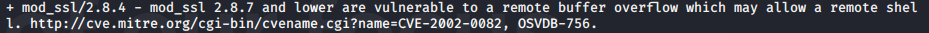

Let's move on to mod ssl/2.8.4

So we check over google: Exploits for mod ssl/2.8.4
And found an Exploit: OpenLuck

folow the installation steps


Let's try brute forcing SSH to check the password strength
1) Using Hydra


And it start checking and if any of the password matches it will return to us
2) Using Metasploitable


>run
Note: Here no password matches indicating strong password habbit